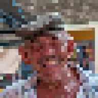

Pixellisation

Transforme le calque en blocs de couleur prélevée au centre de chacun, sur une grille centrée sur le calque ou sur l’image avec Espace écran. Étirement, Décalage et Angle modifient la grille, tandis que Vignettage assombrit les bords de chaque bloc.
Pixelate transforme l’image en gros blocs carrés. Taille règle la taille des blocs : 1 ne change presque rien, 500 donne quelques énormes blocs. Étirement rend les blocs plus larges ou plus hauts, Angle fait tourner la grille et Vignettage assombrit chaque bloc vers son bord. Animez Taille de grande à petite pour révéler une image, ou dans l’autre sens pour en cacher une.
Réglages
| Réglage | Type | Plage | Par défaut |
|---|---|---|---|
| Taille | Nombre | De 1 à 500 | 20 |
| Étirement | Point (X, Y) | De 0.01 à 100 | 1, 1 |
| Décalage | Point (X, Y) | De -5000 px à 5000 px | 0 px, 0 px |
| Angle | Angle | De -3600° à 3600° | 0° |
| Vignettage | Nombre | De 0% à 100% | 0% |
| Espace écran | Activé ou désactivé | – | Désactivé |